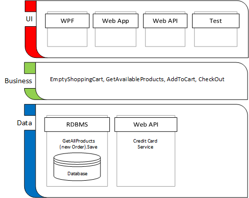

I have done a few talks on Dependency Inversion Principle and breaking down an application into 3 tiers: User Interface, Business Layer, and Data Layer. It is a gross over simplification of software architecture to attempt to describe modern software systems in only 3 layers. There are actual dozens upon dozens of layers. In the next post, I will dive a bit deeper into an example of 17 separate layers. However, this post is a primer where I will just talk briefly about the 3 high level layers.

The Business Layer exists in order to express in the system the business goals and processes of the client. This is agnostic to user interface, database design, programming language, technology stack, or any other technical concern. The Business Layer does not depend on or serve the UI or Data layers. It stands alone. Those other two layers live to serve the business layer.
The Business Analyst’s primary focus should be on describing the business goals and processes in whatever English documentation tool the Business Analyst uses. The Business Layer is a code representation that expresses these business concerns. It is a code smell if an external requirements or design document is required to understand the code base. The code and its documentation easily drift apart. Keeping a layer in the code dedicated to the business concerns ensures these are not lost.
The Business Layer is the place to start when designing a new application or system. You should not start with client by drawing out the user interface on a white board. Nor, would I recommend starting with the database or reporting requirements of the system. You will get to those discussion points with the client eventually; all I am saying is that is probably not the best starting point.
There can (and probably will be) multiple user interfaces build on top of a single business layer. The user interface may be a desktop (WPF) application, web application, mobile application, or business-to-business (B2B) API. This is why business analysts and designers should not bog their selves down drawing out the user interface.
With enterprise software, the client’s organization has many job roles all playing their part in contributing to the success of the business. Analyze those job roles and the actions they perform. When end users take an action, what information was required in order to make that decision?
Even in customer facing software, the customer end user still is trying to get a job done. Express this is terms of the value to the customer. For example, the user is trying to purchase a product, have that product shipped to them, so they can use it. They are not trying save an Order record to the database. Nor are they trying to make all the red validation error marks on the user interface go away.
Analyzing the decisions and actions of the end users independent of user interface or database design will yield an expressive, simple business layer design.
The user interface can have multiple implementations. The user interface might be a thick desktop, web, or mobile application. It might not be a graphic user interface at all; instead, it may be a business-to-business (B2B) API.
Another probable alternate implementation of the user interface layer is an automated integrated test harness. The business layer should have some automated tests. Some tests of the business layer should integrate with the lower database layer, and other micro-tests just test the business layer with the data layer mocked out.
The user interface will call into the business layer. There is typically one business layer per screen/page in the application; however, a dashboard application giving a high-level overview of the system may depend on multiple business layers.
Graphic user interfaces (GUIs) are very difficult to implement. They typically carry many minutiae to get things just right. Developers can waste hours on CSS aligning controls that are only a couple pixels misaligned. Reducing the complexity of the GUI is a primary reason for having a business layer. The GUI should be stupid, just simply mapping of the business layer to the user controls. This maintains a separation of concerns and leaves no place for bugs to hide.
The Data Layer typically refers to a Relational Database Management System (RDBMS) and the Object/Relation Mapping (ORM) framework that makes that data available to the programming language.
However, software architects often describe anything below the business layer as the data layer. An alternate to a RDBMS is often a service API, for example a credit card billing service. The business layer calls a third party service to implement some functionality or share data with an external environment. Note that one person’s third party data layer Web API is another person’s user interface Web API. Different subsystems of a software suite can expose their selves as service layers to other high-level applications in the suite.
Design the data layer so that at some point in future time the business layer can swap in an alternate data layer. There are many reasons why the data layer may change. The ORM may change. The vendor of the RDBMS may change. The database type may change from relational to a No SQL/Document database, graph database, process historian, or event source. Instead of an on premise RDBMS, the database may move to a cloud service provider. Alternatively, it simply may be you want to refactor your database tables a bit.
When the Data Layer changes, the Business Layer and UI should not need to change. This is assuming the change to Data Layer is a pure change to that layer. If the business layer is pushing the data layer change (e.g. a new checkbox or textbox on the user interface that needs persisted), well that will affect all the layers. However, a database refactoring or type change should not affect the business layer. If data layer changes ripple up, this indicates an anemic design.
When designing the business layer think about how a drastic change to the data layer would affect the business layer. If there is an impact, the design is anemic. When designing the business layer think about the end user job roles, actions, and their business goals, not about the data layer.
Well that is a high-level overview of the 3 layers of a well architected program. In the next post, I will dive down to each of the layers and see how they fit together. Peeking behind the curtain will reveal many more layers.